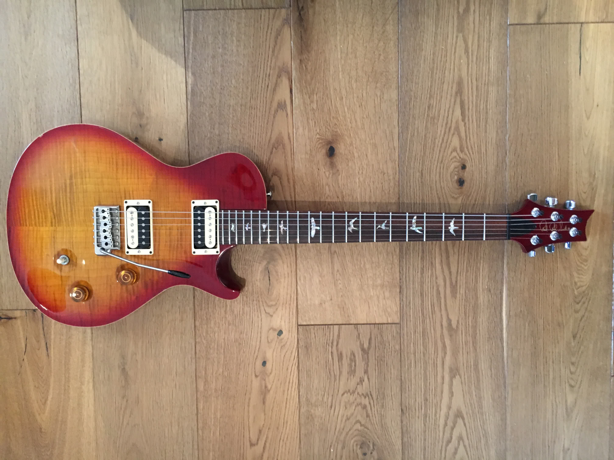

A working guitarist's collection, documented — the instruments, their origins, and the improbable circumstances by which they all ended up in the same room in Dublin.

🎸PRS Singlecut Trem, 2004 — Most played guitar in the collection
Bought at Music Arts Enterprises in Fort Lauderdale on a road trip from New York to San Francisco with Suzanne. Cherry sunburst, ten-top maple, Wide Fat neck. The guitar I have played more than any other.